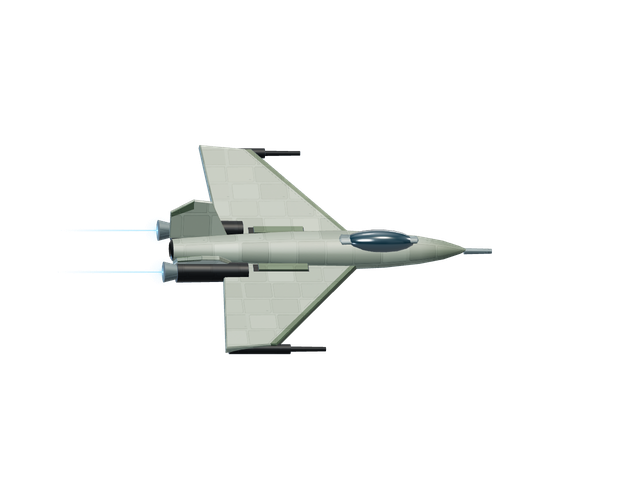
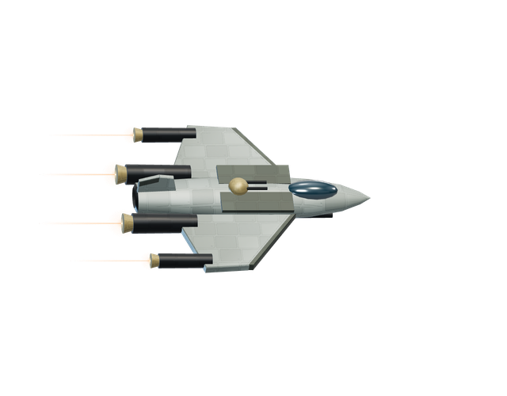
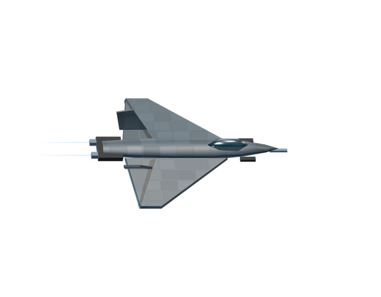

Three original Voyager fighters, rendered from the same models the arena builds at load time.
LIGHT INTERCEPTORVX-01 DART

!ship interceptor
HEAVY GUNSHIPVX-02 BULWARK

!ship sentinel
STEALTH STRIKEVX-03 WRAITH

!ship phantom
Original Voyager designs with Voyager materials and effects; no third-party ship geometry is used. The overlay background remains transparent.
Model sources and attribution